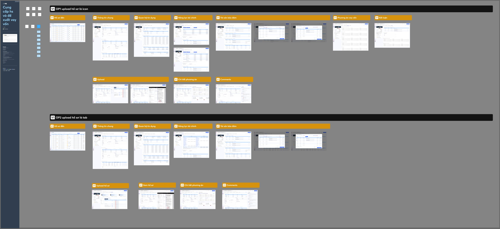

Audit BPM

Trước khi thay đổi bất kỳ màn hình nào, cần biết chính xác người dùng đang vấp ở đâu — và vì sao.Before changing a single screen, we needed to know exactly where users stumble — and why.
01 — Mục tiêu01 — GoalsBa câu hỏi cho một đợt auditThree questions for one audit
Đợt audit hướng tới việc tạo ra sản phẩm phần mềm giải quyết vấn đề thực tế, với văn hoá cộng tác và cải tiến liên tục.
The audit served the team’s mission: practical, user-focused software built on collaboration and continuous improvement.
Người dùng cần BPM để làm gì?What do users need BPM for?
Hiểu nhu cầu sử dụng app BPM của từng nhóm người dùng.
Understand how each user group needs to use BPM.
Trải nghiệm đang ở đâu?Where is the experience today?
- Cấu trúc thông tin
- UI và UX
- Information architecture
- UI and UX
Thay đổi gì trước?What should change first?
Đưa ra đề xuất thay đổi và cập nhật để tối ưu trong thời gian tới.
Recommend changes and updates to optimise in the coming releases.
02 — Kế hoạch02 — PlanChuẩn bị → Audit → Báo cáoPrepare → Audit → Report
Kế hoạch được quản lý trên Notion với từng đầu việc, owner và deadline rõ ràng.
The plan was run in Notion, with clear tasks, owners and deadlines.
Chuẩn bịPrepare
Stakeholder interview để xác định đối tượng, phạm vi, mục tiêu audit.Stakeholder interview to define users, scope and goals.
Heuristic
Đánh giá UI theo 10 nguyên tắc của Jakob Nielsen trên 4 nhóm tính năng chính.UI review against Jakob Nielsen’s 10 heuristics across 4 key feature groups.
Usability Test
Test luồng Cung cấp hồ sơ & đề xuất vay vốn với 3 nhóm user.Testing the file submission & loan proposal flow with 3 user groups.
Báo cáoReport
Tổng hợp vấn đề theo mức độ nghiêm trọng, đề xuất giải pháp.Issues ranked by severity, with recommended solutions.
03 — Stakeholder interviewHiểu sản phẩm qua người sở hữu nóUnderstanding the product through its owners
Phỏng vấn owner và BA để hiểu tổng quan chức năng, đối tượng sử dụng và phạm vi audit. Hai hướng tiếp cận được thống nhất:
- Usability Testing trên phiên bản hiện tại với các nhóm đối tượng chính — tìm vấn đề trong luồng trải nghiệm và thực hiện tác vụ.
- Heuristic Evaluation để đánh giá vấn đề giao diện trên 4 nhóm tính năng chính.
Interviews with the product owner and BA covered functionality, users and audit scope. Two approaches were agreed:
- Usability testing of the current version with the main user groups — finding issues in flows and task completion.
- Heuristic evaluation of interface issues across 4 key feature groups.
04 — Heuristic EvaluationChấm điểm từng vi phạmScoring every violation
Mỗi màn hình được rà soát theo 10 heuristics, ghi lại vị trí, nguyên nhân và đề xuất. Vấn đề được xếp hạng theo thang Severity 0–4:
Each screen was reviewed against the 10 heuristics, logging location, cause and recommendation. Issues were rated on a severity scale of 0–4:
Thiếu nhất quánInconsistency
Cách thể hiện nội dung, trường nhập liệu, nút bấm chưa đồng nhất.
Content, input fields and buttons are presented inconsistently.
Trạng thái không rõUnclear states
Người dùng không hiểu trạng thái hiện tại của các element.
Users can’t tell the current state of elements.
Thiếu điều hướngMissing navigation
Không có tiến/lùi từ màn hình cấp 2, thiếu chỉ báo tiến trình tác vụ.
No back/forward from level-2 screens, no task progress indicators.
Tìm kiếm lộn xộnMessy search
Chưa có quy chuẩn bố cục, màu sắc cho khối tìm kiếm.
No standard layout or colours for search blocks.
Không ngăn lỗiNo error prevention
Không có tín hiệu khi bỏ qua trường bắt buộc khi tìm kiếm.
No signal when required search fields are skipped.
Kết quả cứng nhắcRigid results
Tính linh hoạt khi hiển thị kết quả tìm kiếm chưa cao.
Search results offer little display flexibility.
05 — Usability TestingFindability & Usability
Research questions
- Findability — Người dùng có lập được báo cáo đề xuất trên giao diện mới, có dùng được Comments, Upload…?
- Learnability — Có hoàn thành nhiệm vụ ngay lần đầu sử dụng?
- Efficiency — Thực hiện task có nhanh và dễ dàng?
- Error — Mắc bao nhiêu lỗi, mức độ nghiêm trọng và có tự khắc phục được không?
Kịch bản 30–60 phút
- P1 — Mini interview: tần suất dùng BPM, tính năng hay dùng, trải nghiệm đáng nhớ nhất.
- P2 — Usability test: think-aloud trên prototype, câu hỏi sau mỗi tác vụ.
- P3 — Wrap up: 3 điều muốn thay đổi, chấm điểm dễ sử dụng 1–5.
Research questions
- Findability — Can users create a proposal report in the new UI and use tools like Comments and Upload?
- Learnability — Can they complete a task the first time?
- Efficiency — Are tasks quick and easy?
- Error — How many errors occur, how severe, and can users recover on their own?
30–60 minute script
- P1 — Mini interview: how often they use BPM, favourite features, most memorable experience.
- P2 — Usability test: think-aloud on the prototype, questions after each task.
- P3 — Wrap up: three things to change, ease-of-use score from 1–5.
RM — Đơn vị kinh doanhRM — Business units
Đối tượng sử dụng chính, phân quyền theo đơn vị.
Primary users, permissions by unit.
Thẩm địnhAppraisal
Đánh giá hồ sơ, năng lực tài chính và TSBĐ.
Assess files, financial capacity and collateral.
Kiểm soátControl
Full quyền, kiểm soát tuân thủ và phê duyệt.
Full access, compliance control and approval.
06 — Framework06 — FrameworkUtility & Usability FrameworkUtility & Usability Framework
Để audit hàng chục tính năng một cách nhất quán, mình xây một framework 2 trục, tách bạch hai câu hỏi thường bị gộp làm một:
- Utility — tính năng có đúng không? Phân loại Must / Should / Nice / Cut cùng người dùng RM và CBQL. Tính năng Cut bị loại khỏi scope ngay, không tốn công audit UI.
- Usability — tính năng có dùng được không? Chấm điểm 1–5 theo 5 tiêu chí: Learnability, Efficiency, Memorability, Error Recovery, Satisfaction — mỗi mức điểm có mô tả cụ thể để các reviewer chấm giống nhau.
- Verdict — kết hợp hai trục thành một quyết định duy nhất cho mỗi tính năng: Keep, Adapt, Redesign, Evaluate hoặc Cut.
Nhờ vậy, đầu ra của audit không còn là một danh sách lỗi dài, mà là một backlog đã được ưu tiên: biết rõ cái gì giữ, cái gì sửa nhẹ qua change request, cái gì phải thiết kế lại và đưa vào Design System.
To audit dozens of features consistently, I built a two-axis framework that separates two questions people usually blur together:
- Utility — is it the right feature? Classified Must / Should / Nice / Cut together with RMs and line managers. Cut features leave the scope immediately, saving UI-audit effort.
- Usability — can people use it? Scored 1–5 on five dimensions: Learnability, Efficiency, Memorability, Error Recovery and Satisfaction — each score level has a concrete description so every reviewer scores the same way.
- Verdict — the two axes combine into a single decision per feature: Keep, Adapt, Redesign, Evaluate or Cut.
The audit output stops being a long list of issues and becomes a prioritised backlog: what to keep, what to tweak through a change request, and what to redesign and add to the Design System.
| Score | Label | Định nghĩaDefinition | Hành độngAction | Ví dụ trong CRMCRM example |
|---|---|---|---|---|
| Must | Bắt buộcRequired | Tính năng cốt lõi, thiếu = không dùng được hệ thốngCore feature — without it the system is unusable | Giữ nguyên, ưu tiên audit UIKeep; prioritise the UI audit | Customer 360° view, Target tracking |
| Should | Nên cóShould have | Tính năng quan trọng, thiếu thì bất tiện nhưng không blockImportant; inconvenient without it but not blocking | Giữ, xem xét cải tiến UXKeep; consider UX improvements | Saved search, Batch operations |
| Nice | Tốt nếu cóNice to have | Tính năng tiện ích, người dùng thích nhưng không phụ thuộcConvenience feature users like but don’t depend on | Đánh giá ROI trước khi giữCheck ROI before keeping | Business Card sharing, Cloud Store |
| Cut | Không cầnNot needed | Tính năng không phù hợp với nghiệp vụ MB BankDoesn’t fit MB Bank’s business | Loại khỏi scope, không audit UIRemove from scope; no UI audit | Tính năng cho thị trường Trung Quốc, không áp dụngFeatures built for the Chinese market, not applicable |
| Dimension | Câu hỏi đánh giáQuestion | 1 — Rất kém1 — Very poor | 3 — Trung bình3 — Average | 5 — Tốt5 — Good |
|---|---|---|---|---|
| Learnability | Lần đầu tiên RM/CBQL có hiểu cách dùng không?Do RMs / managers understand it the first time? | Phải đào tạo >2 giờ mới dùng đượcNeeds >2 hours of training | Cần giải thích ngắn, sau đó tự dùng đượcA short explanation, then self-serve | Tự dùng được ngay không cần hướng dẫnUsable straight away, no guidance |
| Efficiency | Sau khi quen, tốc độ thao tác có nhanh không?Once familiar, is it fast? | Mỗi task mất >5 bước hoặc >1 phút>5 steps or >1 minute per task | 3–5 bước, hoàn thành trong 30–60 giây3–5 steps, done in 30–60 seconds | 1–2 bước, hoàn thành dưới 15 giây1–2 steps, done in under 15 seconds |
| Memorability | Sau một thời gian không dùng, có nhớ cách dùng không?After a break, do they remember how? | Phải học lại từ đầu mỗi lần quay lạiHas to relearn every time | Mất vài phút để nhớ lạiTakes a few minutes to recall | Nhớ ngay khi thấy giao diệnRemembers on sight |
| Error Recovery | Khi thao tác sai, có phục hồi được dễ không?When something goes wrong, is recovery easy? | Không có cách undo, mất dữ liệuNo undo; data is lost | Có undo nhưng phải biết tìmUndo exists but is hard to find | Có confirmation rõ, undo dễ, lỗi được giải thíchClear confirmation, easy undo, errors explained |
| Satisfaction | Cảm giác dùng tổng thể thế nào?How does it feel overall? | Gây bực bội, không muốn dùngFrustrating; avoided | Dùng được nhưng không thíchUsable but disliked | Tự nhiên, nhanh, không gây khó chịuNatural, fast, frictionless |
| Utility | Usability Avg | Verdict | Ý nghĩaMeaning | Hành độngAction |
|---|---|---|---|---|
| Must / Should | ≥ 3.5 | Keep | Đủ tốt, giữ nguyênGood enough; keep as is | Không thay đổi UI, chỉ cập nhật tài liệuNo UI change; update documentation only |
| Must / Should | 2.0 – 3.4 | Adapt | Cần cải thiện UX nhưng không làm lạiImprove the UX without rebuilding | Gửi CR cho Hope RunSend a change request to Hope Run |
| Must / Should | < 2.0 | Redesign | UI kém, cần làm lại theo luồng mớiPoor UI; rebuild around a new flow | Thiết kế mới, đưa vào Design SystemNew design, added to the Design System |
| Nice | Bất kỳAny | Evaluate | Cân nhắc ROI trước khi quyết địnhWeigh ROI before deciding | Thảo luận với stakeholderDiscuss with stakeholders |
| Cut | Bất kỳAny | Cut | Không thuộc scope MB BankOutside MB Bank’s scope | Loại khỏi audit, không buildDrop from the audit; don’t build |
07 — Đề xuất07 — RecommendationsTừ findings đến thiết kếFrom findings to design
Mỗi vấn đề được chuyển thành nguyên tắc thiết kế và áp dụng trực tiếp vào bản thiết kế lại BPM Platform:
- Chuẩn hoá component và trạng thái bằng Design System.
- Thêm tab tiến trình, breadcrumb và nút quay lại cho màn hình cấp 2.
- Quy chuẩn bố cục khối tìm kiếm, validate trường bắt buộc ngay khi nhập.
- Cho phép tuỳ biến cột và bộ lọc ở danh sách kết quả.
- Đưa 2 phương án upload (icon vs tab) vào UT để quyết định bằng dữ liệu.
Each issue became a design principle applied directly to the BPM Platform redesign:
- Standardise components and states with the Design System.
- Add progress tabs, breadcrumbs and back buttons to level-2 screens.
- Standardise search layouts and validate required fields as users type.
- Allow customisable columns and filters in result lists.
- Test two upload options (icon vs tab) to decide with data.